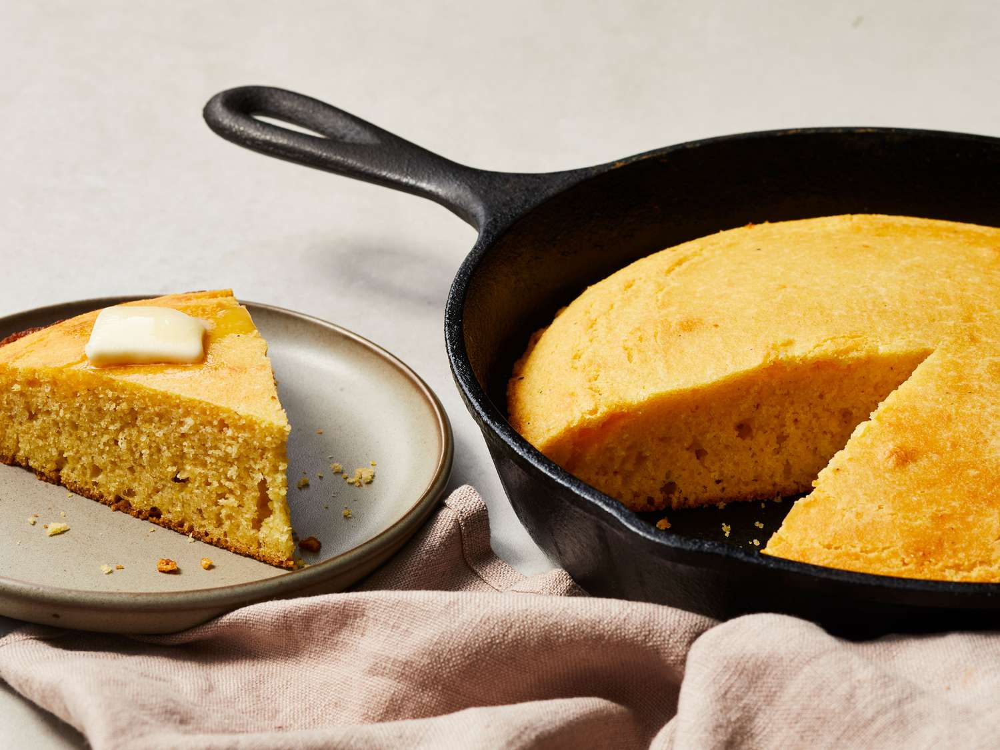

Golden Yellow Cornbread

Ingredients
- 1¼ cup yellow corn meal
- ¾ cup wheat flour
- ½ teaspoon salt
- 1 tablespoon baking powder
- ½ cup butter
- ¼ cup maple syrup
- 1 cup milk
- 2 eggs, beaten
Steps
- Preheat oven to 425°.
- Combine corn meal, flour, baking powder and salt in a bowl.
- Melt butter, mix butter, egg, milk and maple syrup together and add to dry ingredients, mixing until batter is uniform.
- Bake in a greased 9”x9”x2” pan for 20-25 minutes.